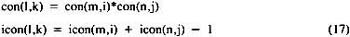
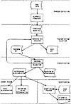
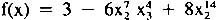
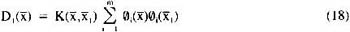
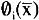
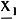
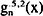

by Abraham Kandel
CRC Press, CRC Press LLC
ISBN: 084934297x Pub Date: 11/01/91
|
|
Fuzzy Expert Systems
by Abraham Kandel CRC Press, CRC Press LLC ISBN: 084934297x Pub Date: 11/01/91 |
| Previous | Table of Contents | Next |
This algorithm implements the details of the classification method described in the previous section. It receives as input the training set and proceeds iteratively to produce a separating hypersurface. The result of this program is an algebraic equation which represents this hypersurface.
In the algorithm outlined in Section II. algebraic equations must be maintained through all stages of the computation. The result itself is an equation. In order to accomplish this, the program must be capable of performing algebraic operations, rather than straight-forward numerical computation.
If multidimensional polynomials are generated from one-dimensional polynomials, the following procedure is used. The required sets of polynomials of one variable are stored in 2 two-dimensional arrays: con(i,j), icon(i,j) — where con(i,j) contains the coefficient of term j in polynomial i and icon(i,j) contains one plus the power of x corresponding to that coefficient. If a coefficient is zero, it is not stored. This representation permits compact storage of the polynomials.
The polynomial coefficients are generated through the use of the appropriate recurrence relation. The coefficients for the first two terms are initialized with all remaining terms generated recursively.
The multiplication of term i in polynomial m by term j in polynomial n to yield term k in polynomial l is accomplished by the two operations:

In order to generate the multivariant polynomials, the following procedure is followed:

Figure 1 Flow of Pattern Classification System.
The internal representation of a multidimensional polynomial is the following:
phi(i,j): coefficient for polynomial i, term j
iphi(i,j,k): power plus one of xk for polynomial i, term j
For example:
phi(1,1) = 3, phi(1,4) = -6, phi(1,7) = 8
iphi(1,4,2) = 8, iphi(1,4,3) = 5, iphi(1,7,2) = 15
would represent:

If the Cohen multidimensional polynomial is used, it can be stored directly in the phi and iphi arrays.
Once the chosen orthogonal polynomial is represented in this structure, the first equation in the training set is used to compute initial weighting factors through the equation:

where  is the preceding polynomial, and  is the first vector in the training set. Subsequent interactions are then accomplished by using Equations 4 and 6.
The use of exercise treadmill testing (ETT) to classify patients with coronary artery disease has resulted in disagreement about which parameters should be included in the analysis. This is an important test for diagnosis, because it is noninvasive. If the results are accurate, it can be used in place of more invasive and potentially harmful tests such as cardiac catheterization.
The following data were collected for exercise testing subjects who also had cardiac catheterization to confirm diagnosis: identification number, age, date of cardiac catheterization, results (0, 1, 2, or 3 diseased vessels), date of ETT, resting heart rate, resting blood pressure, resting electrocardiogram (ECG) results, time of angina, heart rate and blood pressure at time of angina, time of 1 mm ST depression, heart rate and blood pressure at 1 mm ST depression, maximum ST depression, total duration of ETT, heart rate and blood pressure at end of ETT, total duration of chest pain, total duration of ST depression, and reason for stopping ETT. Seventy cases were analyzed.37,41,42 An ST depression is a cardiac arrhythmia in which the ECG signal drops below the baseline following ventricular contraction of the heart.
The following parameters were used as features: maximum ST depression, percentage changes in heart rate and in blood pressure from beginning to end of test, and product of heart rate and blood pressure at end of test.
Four classes were used: class 0 — patients with no coronary artery disease; class i — patients with i diseased vessels, i = 1,2,3. Each class was compared separately to each of the other classes.
For the application described in Section IV. the results for the new Cohen multidimensional polynomial were compared to other classification methods. The first was the method previously developed by the authors for the single-dimensional Cohen orthogonal functions. A special case of the one-dimensional Cohen orthogonal polynomial, , is used to demonstrate the one-dimensional approach.38 This is a special case of Equation 7. The new multidimensional method is represented by Cn(x). The second method used for comparison was standard nonlinear statistical discriminant analysis.
The classification results are shown in Tables 1 and 2 for coronary artery disease. For two cases, equivalent results were obtained by the multidimensional polynomials in fewer iterations. In the remaining two cases, more accurate results were achieved with the multidimensional polynomial. In all cases, the pattern recognition approach produced superior results to nonlinear statistical discriminant analysis.
Sample equations for class 0 vs. 1 for the ETT data are shown below for the one-dimensional polynomial  and the multidimensional polynomial Cn(x):
Dg = -2.2 + 2.9x1 + 3.3x2 + 4.6x3 + 2.9x4 - 21.5x3x4 + 11.4x2x4
+ 1.9x1x4 - 19.4x1x2 + 7.9x1x3 - 1.6x2x3
Dc = 5.3 - 7.4x1 + 2.4x2 - 23.3x3 + 39.8x4 - 60.0x3x4 + 31.1x2x4
+ 5.3x1x4 - 52.1x1x2 + 28.9x1x3 - 6.8x2x3
where
| x1: | Maximum ST depression |
| x2: | Percentage change in heart rate from beginning to end of test |
| x3: | Percentage change in blood pressure from beginning to end of test |
| x4: | Percentage of heart rate and blood pressure |
| Previous | Table of Contents | Next |
){kind=link}